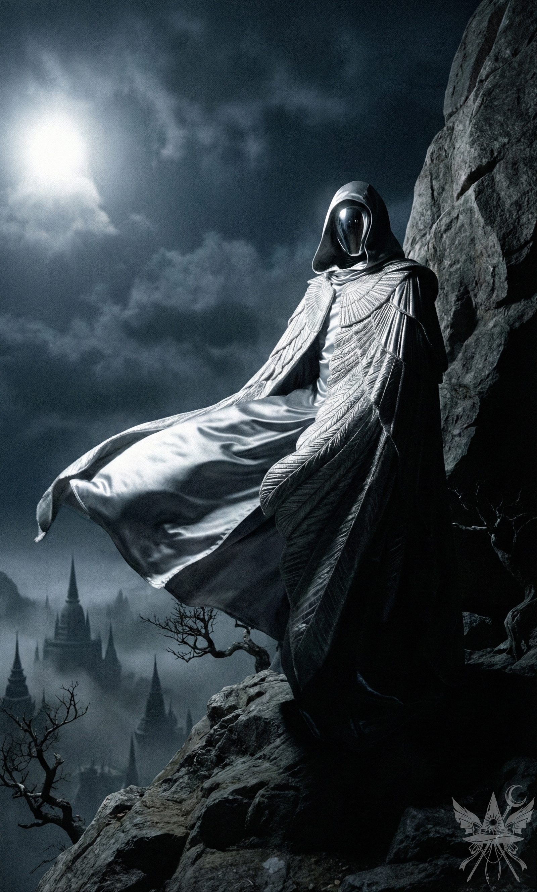

ソクラテスのゴロゴロという喉鳴りが肩口から伝わってくる。これから始まる惨劇を特等席で楽しむかのように、後ろ足を背中に垂らしてどっしりと居座っていた。かつてシステムの中枢に触れていたという過去など微塵も感じさせない、ただのふてぶてしい獣だ。
しばらくの間、旋回する天使たちの群れを冷ややかに観察した後、肩の上の重みを無造作に地面へ下ろした。月の姉妹という狂犬を、このまま野放しにするわけにはいかない。シューニャの群れを寺院ではなく、あの姉妹にぶつけるべきだ。
「おい、メデア。どこへ行くつもりだニャ？」
不満げに片目を開けたソクラテスを、冷たく見下ろす。
「月の姉妹があま子を人質に取って、寺院を焼き払おうとしているのよ。見過ごせないわ」
「ちょっと待つんだニャ！ あま子も寺院も、どうでもいいニャ。俺たちの計画を邪魔するつもりかニャ？」
「他の世界の混乱を放っておく趣味はないの。カナと私には別の計画があるのよ。それをやり遂げるだけだわ」
鼻で笑う気配が足元からした。
「聖なる空虚かニャ。自分を慈悲深い聖女か何かと勘違いしていないかニャ？ 周りの連中を救おうとしているなんてカナが知ったら、どうなると思うニャ？ あいつに『つまらない人間』のレッテルを貼られちまうニャ。そうなった奴がどうなるか、教えてほしいかニャ？」
無言で見返す。挑発に乗る気はない。
「あのメンヘラのガキが、本気で誰かを救おうとしているなんてあり得ないニャ。勘違いも甚だしいんだニャ。それとも、あいつを改心させてお人好しにでも変えられるとでも思っているのかニャ？ そんなことより、有頂天市全体が地球に落ちてくる方が早いニャ」
「言いたいことはそれだけかしら、ソクラテス」
低く抑えた声で切り捨てる。
「いや、まだまだあるニャ。昨日言ったはずだニャ？ 君たちが間違った道を進むなら、その計画を誰かに話しちゃうかもしれないってニャ……」
「脅迫のつもり？ で、誰に話すの？ 閻魔に？」
図星を突かれたのか、獣が口を閉ざす。構わず追撃をかける。
「私たちがあなたをそこまで必要としているとでも？ いい加減になさい。私たちがいなければ、あなたはただの猫よ。サーバーへの侵入は確かに面白そうだけど、付き合ってあげるかは私の気分次第なの。今は他にやるべきことがある。……わかった？」
つまらない小競り合いは避けたいが、この生意気な元技術者には明確な力関係を叩き込んでおく必要がある。
「ただの猫かニャ？ わかったニャ、ただの人間。好きに聖女気取りで暴れているといいニャ。後で俺が警告しなかったなんて言うなよ。閻魔の前で良い子ちゃんぶって、何がしたいんだニャ？」
「……何を言っているの。閻魔が何の関係があるのよ」
「大ありだニャ」
ソクラテスは鋭い爪を立てるように言葉を紡ぐ。
「このセクターでの君たちの行動原理は、すべて裁判に対する潜在的な恐怖に基づいているニャ。でも、歴史は勝者によって作られるもんだニャ。歴史を書き換えれば、誰にも言い訳する必要がなくなる。まだわからないのかニャ？」
「わからないわね。私は私の信念に従うだけよ。最初から誰にも言い訳なんてするつもりはないわ。罪のない人たちの苦しみを和らげたい。そのために戦っているのよ」
唐突に、腹の底から湧き上がるような喉鳴りが再び響いた。嘲笑だ。
「自分に嘘をつくのはやめるんだニャ。君はただ、鼻につく奴らがいない世界で快適に暮らしたいだけだニャ。『罪のない人々の苦しみ』なんて、ただの綺麗事だニャ。今思いついたんだろニャ？ それに、『罪』なんて閻魔が勝手に決めているだけだニャ。閻魔のこと、そんなに気にしてたのかニャ？」
「違うわ。……『罪』は、私が決めるのよ」
言い放ち、振り返ることなくトンネルを抜けて石の扉を閉ざす。ソクラテスの言葉の棘が胸の奥で微かに疼いたが、今は無視するしかない。
星明かりを頼りに、ゴツゴツとした岩肌を伝う。山頂に陣取る仮面の革命家、シューニャ。天使たちを扇動し、今まさに蜂起の火蓋を切ろうとしている。空郎の推測通り、あの正体が比那名居天子本人である可能性は高い。だが、直接接触しなければ確信は得られない。生意気な猫の知恵はもう借りられない。自力で突破口を開くのみだ。
頂上への道のりは容易かった。アーモンドの木が落とす深い影が、身を隠すのに好都合だった。切り立った崖の上に、シューニャは英雄気取りで風を受けて立っている。
（天界にも風が吹くのね。それにしても、本気なのか芝居なのか……。私には芝居しかできないけれど）
気配を殺し、蛇のように背後へと忍び寄る。
（天子かどうか確かめるには、仕掛けるしかない。もし違えば、私はただの不審な仏教徒として敵陣のど真ん中。けれど、直感は天子だと告げている……）
「シューニャ！ 話がしたいわ」
冷たい夜気を切り裂くように、唐突に声を放つ。

振り返ったその姿に、一瞬息を呑む。
そこに「顔」はなかった。
鋭い冷風が吹き荒れる荒涼とした岩山。眼下には霧に沈む仏塔の群れが広がり、満月の青白い光がすべてを氷のように照らし出している。その冷徹な光を、のっぺらぼうの鏡面が鋭く反射していた。無機質で滑らかなその表面に映し出されているのは、周囲の荒れ狂う風景と、天子の姿を借りたメデア自身の姿だけ。感情も、温度も、生命の息吹すら感じられない「空っぽ」の異形が、ただ黙ってこちらを見下ろしている。
表情が読み取れない以上、僅かな反応の揺れから推測するしかない。だが、鏡の怪人は数秒間、身動き一つしなかった。
「シューニャ！ 正体はわかっているのよ」
確証のないハッタリを重ねる。
天使たちを呼び集める気配も、攻撃を仕掛けてくる様子もない。風の音だけが二人の間を通り抜ける。
「君が？ ……ああ、わかったわ！ ……君が私の良心ね」
鏡の奥から、くぐもった、しかし聞き覚えのある声が響いた。
（見事に引っかかったわね、革命少女。カナの教えを活かして、たっぷり遊んであげるわ）
「その通りよ、天子。私はあなたの見捨てた善意。恐ろしい真実を伝えに来たの。もう止まるべきだわ」
鏡面の奥で、天子が独り言のように呟く。
「真実？ 私に？ ……聞かせてよ……真実だと？ ……私がどうかしてるっていう、その真実を……？」
（面白い。正気を失っているのか、それとも元々こうだったのか。自分のドッペルゲンガーに出会えば、頭がおかしくなるのも無理はないけれど）
内心の嘲笑を隠し、悲痛な芝居を続ける。
「あなたは良心を葬ったつもりでも、私はいつも心の中にいるの。悪事は許さないわ！」
（ますます面白くなってきたわ。カナが見たら、さぞかし喜ぶでしょうね）
天子はじりじりと歩み寄ってきた。
「ああ、それはこれからわかるわよ！ 私はいつも良心と折り合いが悪かった……。そして、どっちが強いか試す絶好の機会が来たのよ。私を倒したいんでしょ？ 苦しめたり、貶めたり、踏みつけにしたりしたいんでしょ？」
突如、天子が手のひらを前に突き出し、影に隠れるよう合図を送ってきた。そして身を翻すと、眼下にひしめく天使たちへ向けて声を張り上げる。
「偉大なる民よ、翼ある兄弟姉妹たちよ！ 十五分後に出発だ。ここで待機せよ！」
重力から解き放たれたように宙へ舞い上がる。
「行くわよ」
短く告げられ、後を追う。アーモンドの木が鬱蒼と茂る急斜面で、天子は足を止め、こちらを振り返った。
「良心よ！ 弾幕勝負で決着をつけましょう。標準ルールで、先に三回当てた方が勝ち。あなたが勝ったら、何でも言うことを聞くわ。私が勝ったら、私の頭から永遠に消えなさい。いいわね？」
暗闇の中、わずか二メートルほどの距離で対峙する。足場は劣悪で、一歩踏み外せば斜面を転がり落ち、木々の枝に肉を裂かれるだろう。張り詰めた冷気の中、天子は鏡面の奥から、黙ってこちらの返答を待っていた。
[SYSTEM ALERT: 音響兵器デプロイ完了]
▼ 本章の絶望を1000%味わうための専用聴覚データ ▼
■ YouTube：『Heartbeat of the Igloo （イグルーの鼓動）』